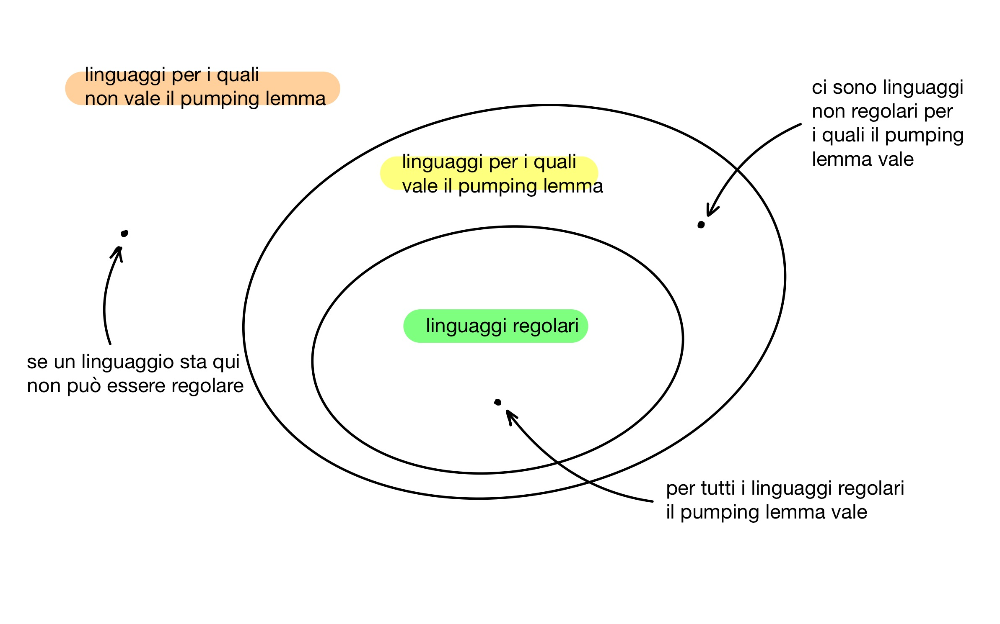

aᵏbᵏ non è regolareaᵏbᵐ con k ≤ m non è regolareaᵏ con k primo non è regolareÈ proibito condividere e divulgare in qualsiasi forma i materiali didattici caricati sulla piattaforma e le lezioni svolte in videoconferenza: ogni azione che viola questa norma sarà denunciata agli organi di Ateneo e perseguita a termini di legge.
Per dimostrare che un linguaggio è regolare, basta esibire un automa a stati finiti (DFA, NFA o ε-NFA) che lo riconosce, oppure una espressione regolare che lo genera. L’incapacità di trovare siffatto automa o siffatta espressione non è una dimostrazione del fatto che il linguaggio non è regolare.
In questa lezione rispondiamo alle seguenti domande:
Cerchiamo una proprietà $P$ soddisfatta da tutti i linguaggi regolari:
\[ \text{$L$ regolare} ⇒ \text{$L$ soddisfa $P$} \]
Se troviamo un linguaggio $L$ che non soddisfa $P$, allora per contrapposizione possiamo concludere che $L$ non è regolare:
\[ \text{$L$ non soddisfa $P$} ⇒ \text{$L$ non è regolare} \]

Per ogni linguaggio regolare $L$ esiste $n ∈ \bN$ tale che, per ogni $w ∈ L$ con $\len{w} ≥ n$, esistono $x$, $y$ e $z$ tali che $w = xyz$ e inoltre:
aᵏbᵏ non è regolareDimostriamo che $L = \set{ a^kb^k ∣ k ≥ 0 }$ non è regolare facendo vedere che per $L$ il pumping lemma non vale.
Supponiamo, per assurdo, che esista $n$ con le proprietà enunciate nella slide.
Considero la stringa $w = a^nb^n$, che è in $L$ e ha la proprietà $\len{w} = 2n ≥ n$.
Devono esistere $x$, $y$ e $z$ tali che $w = xyz$ e che soddisfano le condizioni 1–3 della slide.
Dalla condizione 2 sappiamo che $x$ e $y$ sono composte di sole a.
Dalla condizione 1 sappiamo che $y$ contiene almeno una a.
Dalla condizione 3 sappiamo che $xz ∈ L$.
Ma ora in $xz$ ci sono più b che a, il che contraddice la
definizione di $L$.
Sia $L$ un linguaggio regolare.
Dunque esiste un DFA $A = (Q, Σ, \delta, q_0, F)$ tale che $L = L(A)$.
Poniamo $n = \len{Q}$, ovvero $n$ è il numero di stati di un DFA che riconosce $L$.
Prendiamo $w \in L$ tale che $\len{w} ≥ n$. Deve essere $w = a_1a_2\cdots a_m$ con $m \geq n$.
Se rappresentiamo il cammino fatto da $A$ per riconoscere $w$ come segue
notiamo che questo cammino passa attraverso $m + 1$ stati.
Siccome $m ≥ n$ abbiamo $m + 1 > n$. Ovvero, gli stati attraversati non possono essere tutti distinti, perché l’automa ne ha solo $n$.
Deduciamo che il cammino fatto da $A$ può essere rappresentato così
dove $q_i = q_j$ e $i < j$.
Possiamo supporre, senza perdere in generalità, che $q_i = q_j$ sia il primo stato che si ripete in questo cammino (ce ne possono essere tanti).
Il cammino fatto da $A$ può allora essere rappresentato anche così:
Ora definiamo le stringhe $x$, $y$ e $z$ come segue:
Notiamo che
e questo conclude la dimostrazione.
aᵏbᵐ con k ≤ m non è regolareDimostriamo che $L = \set{ a^kb^m ∣ 0 ≤ k ≤ m }$ non è regolare facendo vedere che per $L$ il pumping lemma non vale.
Supponiamo, per assurdo, che esista $n$ con le proprietà enunciate nella slide.
Considero la stringa $w = a^nb^n$, che è in $L$ e ha la proprietà $\len{w} = 2n ≥ n$.
Devono esistere $x$, $y$ e $z$ tali che $w = xyz$ e che soddisfano le condizioni 1–3 della slide.
Dalla condizione 2 sappiamo che $x$ e $y$ sono composte di sole a.
Dalla condizione 1 sappiamo che $y$ contiene almeno una a.
Dalla condizione 3 sappiamo che $xyyz ∈ L$.
Ma ora in $xyyz$ ci sono più a che b, il che contraddice la
definizione di $L$.
aᵏ con k primo non è regolareDimostriamo che $L = \set{ a^k ∣ \text{$k$ primo} }$ non è regolare facendo vedere che per $L$ il pumping lemma non vale.
Supponiamo, per assurdo, che esista $n$ con le proprietà enunciate nella slide.
Consideriamo la stringa $w = a^p$ dove $p$ è un numero primo $p ≥ n + 2$. Siamo sempre in grado di trovare $p$ con questa proprietà in quanto esistono infiniti numeri primi. Inoltre, la stringa $w$ è in $L$ e ha la proprietà $\len{w} ≥ n$.
Devono esistere $x$, $y$ e $z$ tali che $w = xyz$ e che soddisfano le condizioni 1–3 della slide.
Definiamo $m = \len{y}$, da cui segue che $\len{xz} = p - m$. Dalle condizioni 1 e 2 sappiamo che $1 ≤ m ≤ n$. Dalla condizione 3 sappiamo che $xy^{p-m}z ∈ L$. Tuttavia
\[ \len{xy^{p-m}z} = \len{xz} + (p-m)\len{y} = p - m + (p - m)m = (p - m)(m + 1) \]
e ora concludiamo che $\len{xy^{p-m}z}$ non è primo in quanto:
Dimostrare che i seguenti linguaggi non sono regolari: